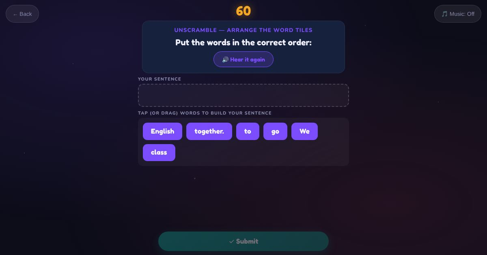

For teachers and tutors
About Listen and Unscramble
A listening and word order game. The learner hears a sentence, like "I have one son and one daughter.", then puts the mixed-up word tiles in order. The sentences cover personal information, family, home, daily routine and the weekend. In multiple choice the learner taps the sentence in the right order.

How to play
- Listen to the sentence.
- Tap or drag the words into order.
- Check your sentence.
Play it as a class
Choose Listen and Unscramble in the Teacher Game.